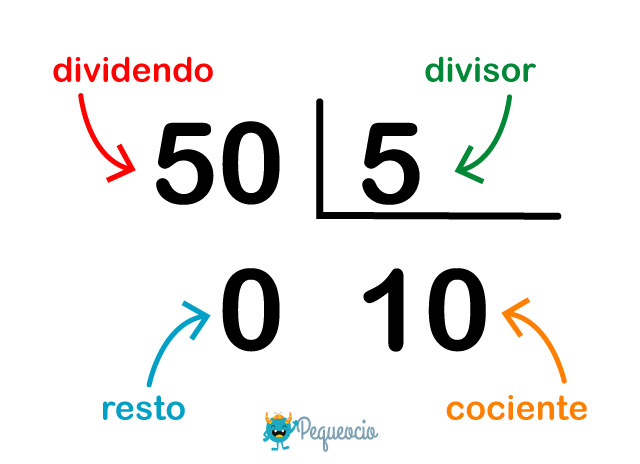

Veamos un ejemplo:
Una división es la operación inversa a la multiplicación.
Una división tiene diferentes partes, llamadas términos. Los términos de la división son:
DIVIDENDO: es el número que vamos a dividir
DIVISOR: es el número que divide al dividendo, es decir la cantidad de partes en la que queremos dividir al dividendo.
COCIENTE: es el resultado de la operación
RESTO:: es la parte que sobra, es decir que no se ha podido distribuir.
Vamos a aprender a dividir con un ejemplo práctico:
Tenemos que averiguar cuántas veces entra 9 (el divisor) en 54 (el dividendo). Para ello vamos a buscar en la tabla de multiplicar del 9, el resultado que esté más cerca de 54, pero sin pasarse:

Vemos que 9×6 es igual a 54. Por lo tanto 6 es el resultado de la división, es decir el cociente. Y el resto será 0, porque no nos ha sobrado nada.
👉 ATENCIÓN: cuando el resto es 0, es decir que todo el dividendo queda distribuido entre el divisor y no sobra nada, se dice que es una división exacta. Cuando el resto es un número distinto de 0 (pero siempre menor que el divisor), es decir que una parte del dividendo no se ha podido distribuir, hablamos de división con resto.